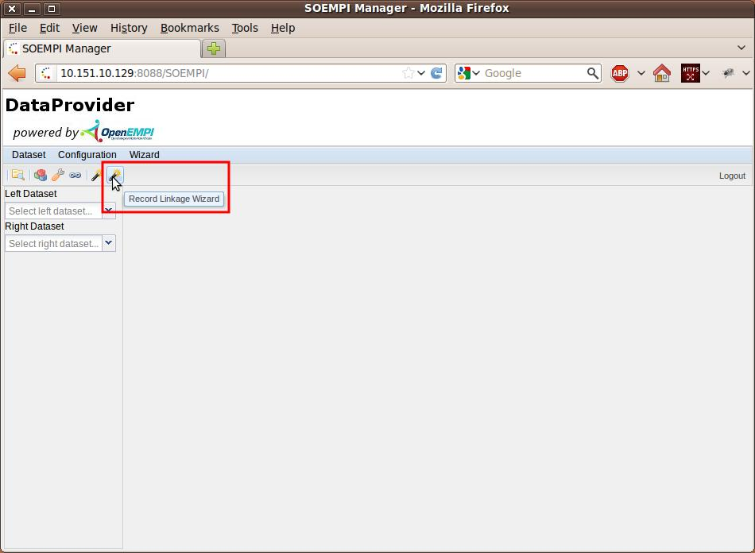
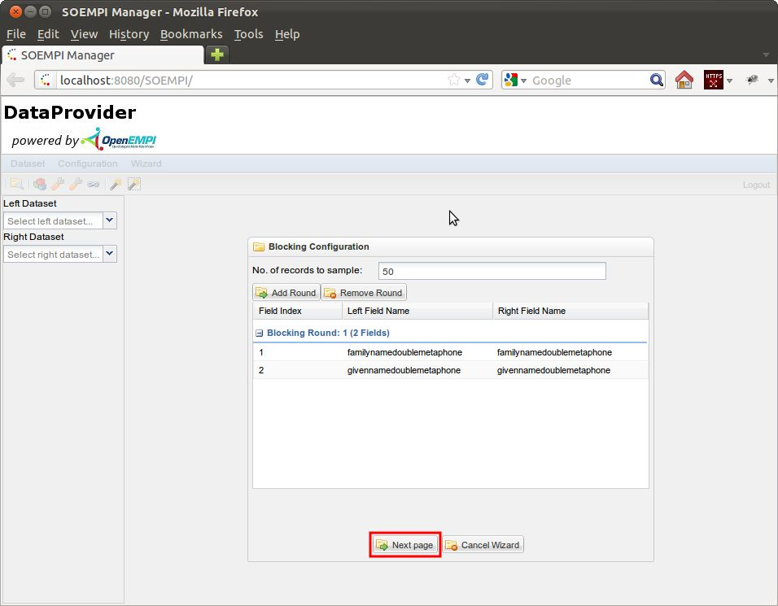
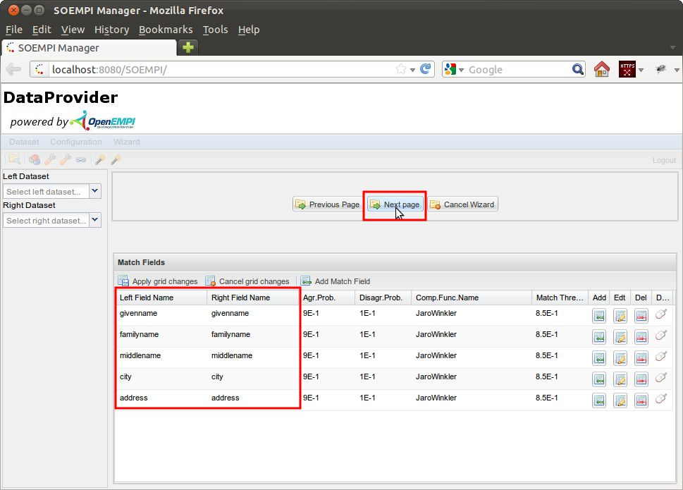
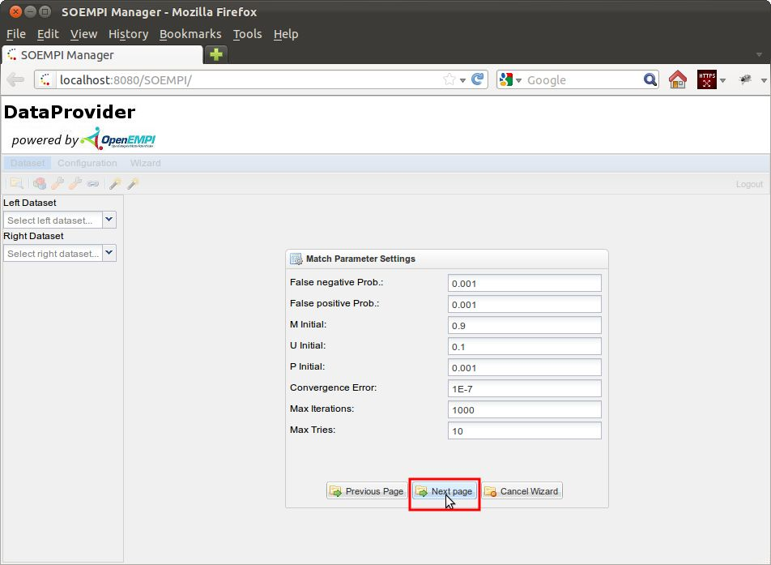
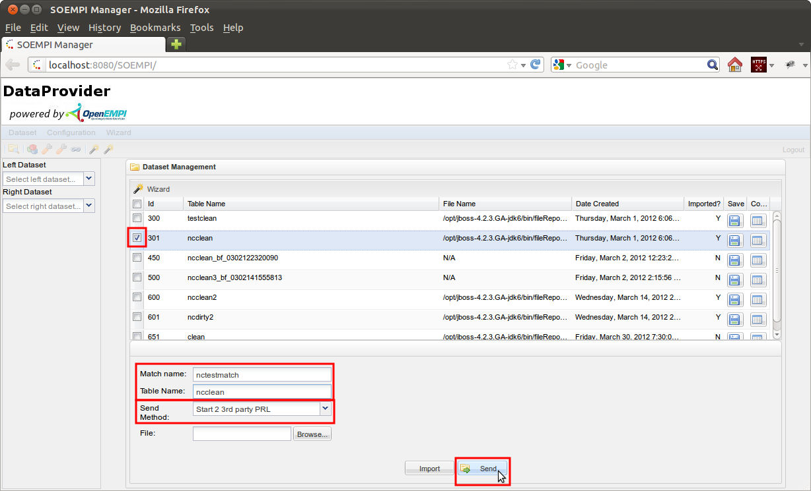
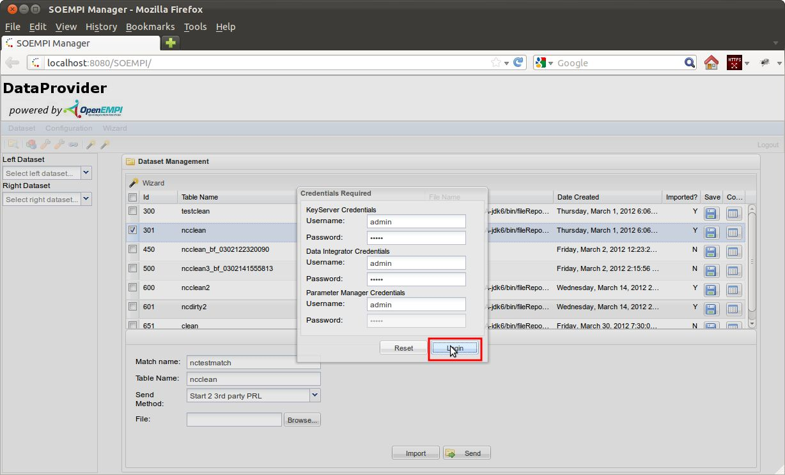
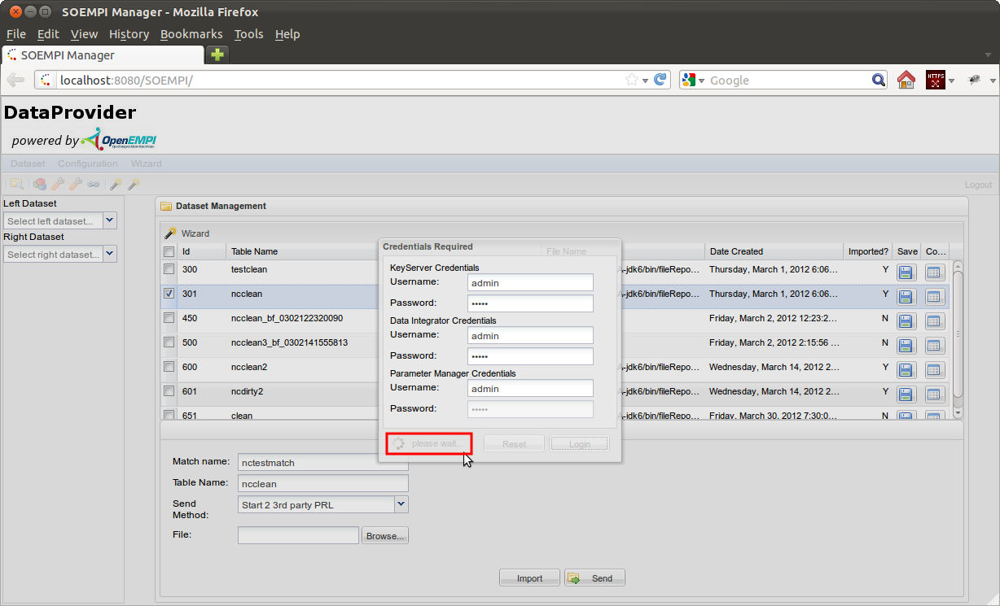
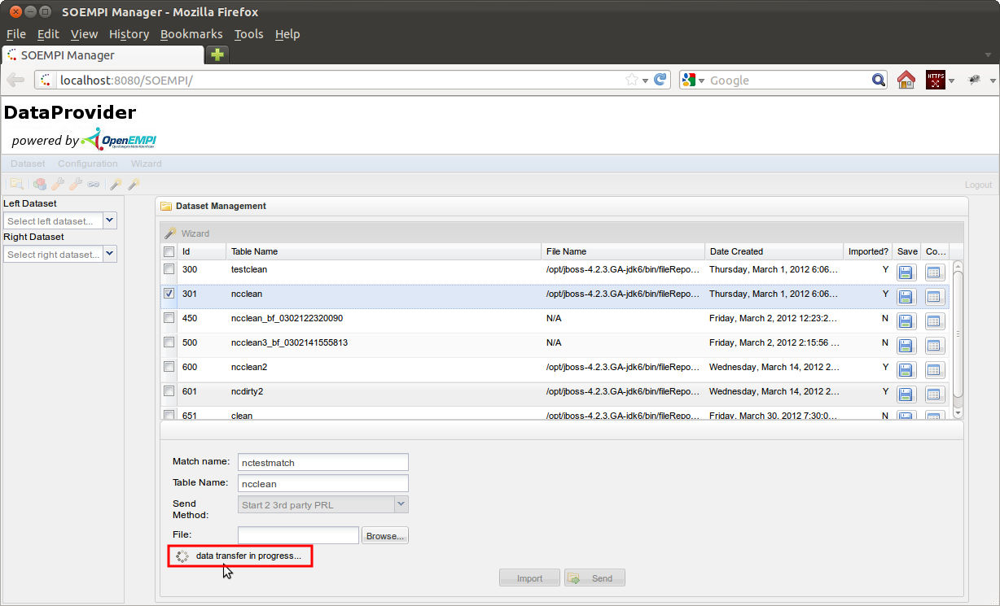
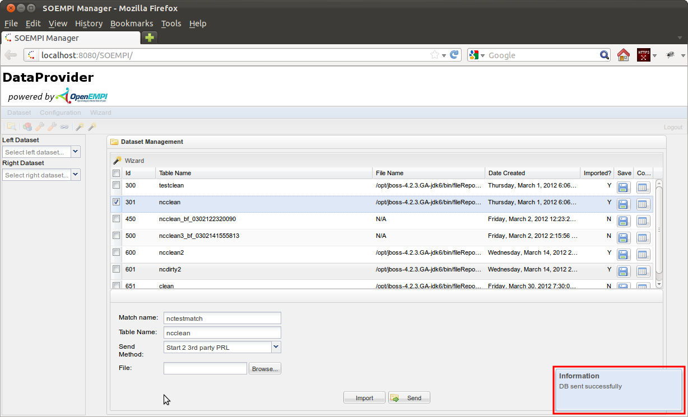

Multi-party privacy preserving record linkage, 2 3rd parties
You supposedly setup and configured every participant and imported the two datasets to the two data providers.
A wizard is accessible at the Data Providers which guide through the configuration steps.
- First please log in to the data provider if you haven't done so.

- Click on the Record Linkage Wizard toolbar button or activate it from the menu.

- You will be presented the Blocking Configuration page, which is only relevant for 3 3rd party setups.
Click on the Next button.

- You'll see the Matching Fields Configuration page.
Right now SOEMPI deducts the matching fields from that configuration, and these fields will be sent to the data Integrator.
Right now the Data Provider send all records to the Data Integrator so it'll generate all record pairs
from the two received samples, there's no blocking.

- You'll see the Matching Parameters Configuration page, where you can configure the EM specific settings.
The Data Integrator doesn't take these detailed values from the Data Providers. So you have to make
certain settings right there before the process. Click on the Next button.

- Please input the following:
- Select the desired dataset you want to start with by the leading checkbox of the row
- Unique match name (this is the unique name for the PRL itself, and the other DP should specify the same value,
that's how requests are paired with each other)
- Unique table name (the table will be created at the Data Integrator with this name)
- Select the desired PRL protocol method (in this case: 2 3rd party)
Press the Send button to start the procedure:

- Next a dialog will pop-up where you can specify credentials for the Key Server, and the Data Integrator.
Notice, that the Parameter Manager inputs are disabled because they are not relevant in case of the 2 3rd party scenario.
Let's leave the default values in the Login dialog for the sake of the argument of this guide.

- The procedure starts:


Currently the AJAX wait icon is a little covered.
- When the procedure finishes, the Waiting ribbon and icon disappears.

The following things happened in the background (TODO screenshot DB changes):
-
Data Provider beginning:
- DP authenticates itself to the DI with the appropriate credentials entered in the PRL Login screen.
- DP sends the whole BF dataset to DI.
- Finally DP sends a PersonMatchRequest object, which specifies the unique match codename (so they can be paired), the table name, etc.
-
Calculations at DI
- DI accepts PersonMatchRequests. Every time it receives one tries to look up a matching one in the database.
If a matching one found the computation begins.
- DI generates all possible record pairs from the datasets and performs an EM calculation and
record linkage (using DiceBinary comparisons and scaled weight scoring method).
- DI persist the linkage results.